| When Eric is in Montana, things happen!
We did a ton of stuff during his August visit this year, and I have over
100 photos to prove it! |
|
| Lonestar Concert | |
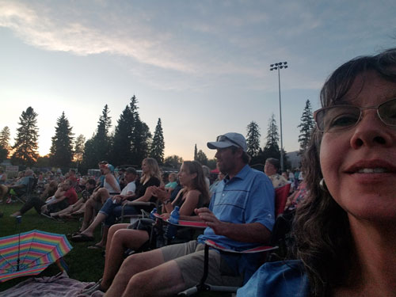 |
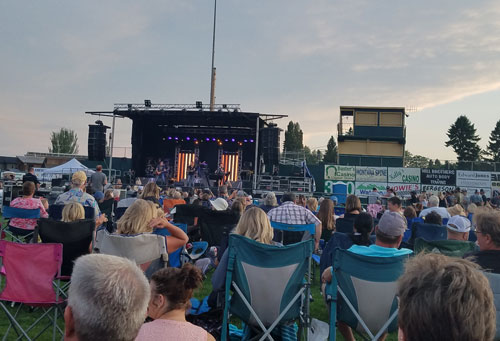 |
| Eric arrived in MT on a Thursday and on Friday night we joined about 10
family members for a Lonestar concert in Whitefish. A great time was had by all. This shows Dan & Tracie, Jeb & Amy, and me. |
Looking toward the stage and Lucas & Kristi sitting ahead of us. |
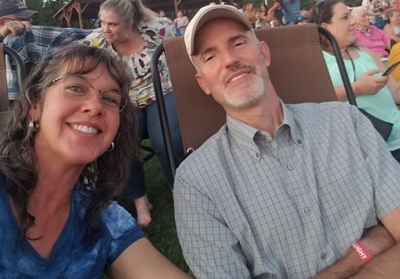 |
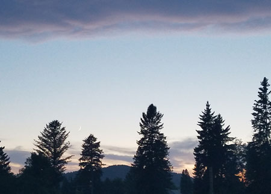 |
| Selfie! Eric gets sleepy when he is bored, but he stayed awake the whole night! | Lovely skies over the concert. |
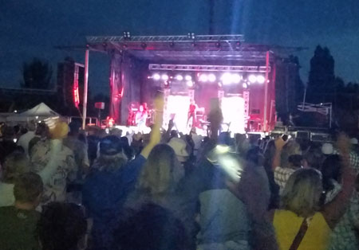 For the grand finale they played a medley of all the old songs everyone loves. |
|
|
EMQS 2019 |
|
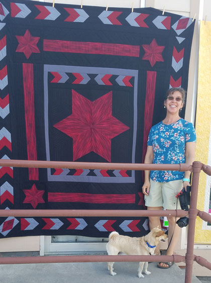 |
|
| The next day was the Eureka Montana Quilt Festival, a huge deal in our
little town. Here I am with one of my creations, which sold that day - exciting! |
|
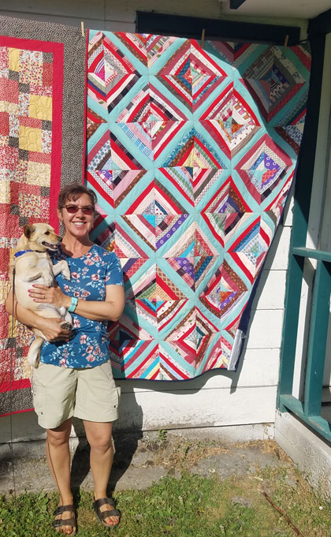 |
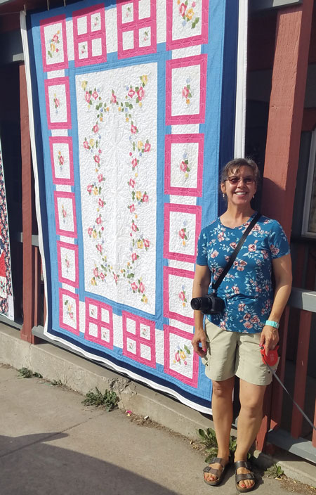 |
| I didn't piece this top, I found it at an estate sale and quilted it. It sold that day too. | I am proud of this quilt, as I made up the whole idea for it from
scratch. It used to be a tablecloth but I turned it into a quilt. It sold that day as well. Woo hoo! |
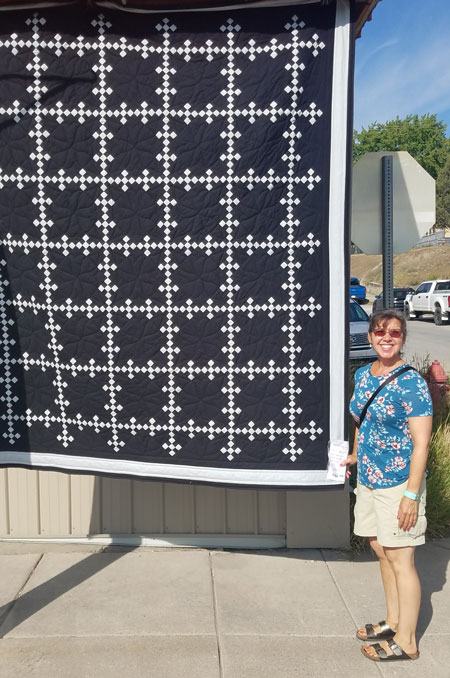 |
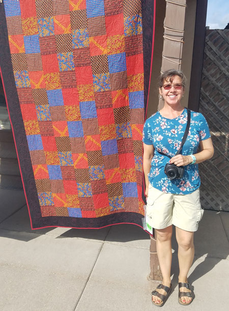 |
| The silver in this quilt is shiny, but you can't tell in photos. It
just wasn't exciting enough to catch the eye of a buyer that day, maybe someday. |
Another quilt top I found at an estate sale and quilted. This was my
first (and only) time to use a long arm quilting machine. It was a fun experience! This one sold too. |
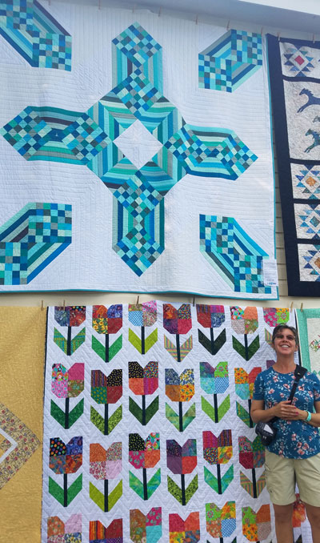 |
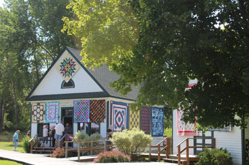 The historic village church decked out with beautiful quilts. |
| My quilt is the teal and white one up high. When I posted this on FB,
I got lots of compliments on the tulip quilt, but that was made by my friend Debby Tribble & her quilt group, Uncommon Threads. My quilt did sell though, so someone liked it! |
|
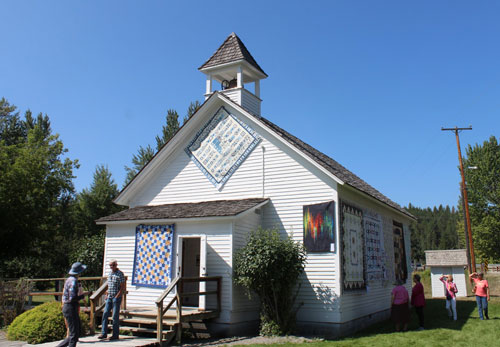 |
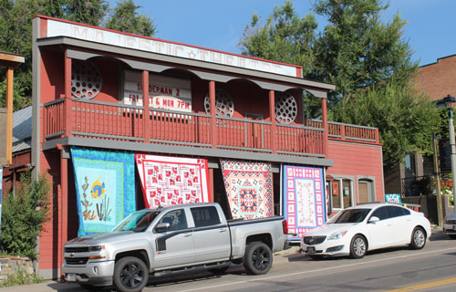 |
| The historic village school likewise beautifully adorned. | The movie theater on main street, which includes one of my quilts on the right side. |
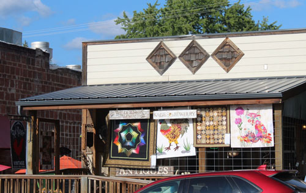 I thought it was great that the "Red Rooster" gift shop got a rooster quilt as part of its display. |
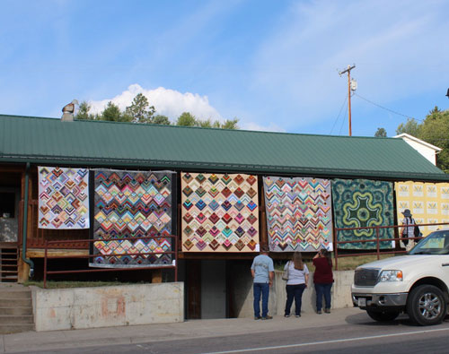 |
| One last street scene. We had at least 2 tour buses bringing folks to
town, and over 600 quilts in the show. I volunteered all day and was worn out by the end, it was great! |
|
| North Fork Float Trip |
|
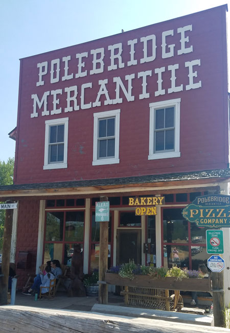 |
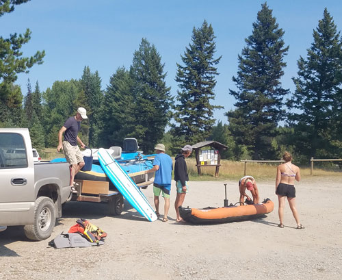 Getting everything ready. |
| The next day we had the chance to go on a float trip with Jeb & Amy,
who generously offered to let us share their nice boat with them. We started in lovely Polebridge, MT. This is a great little town just outside the western side of Glacier Park, there is no power to the whole town which gives it a lot of character. |
|
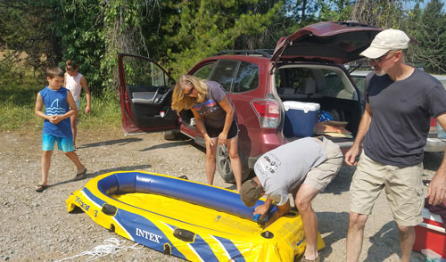 |
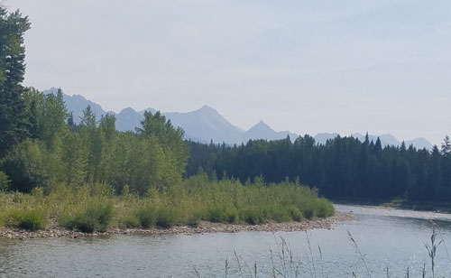 |
| Dan & Tracie airing up their boat. | A first look at the North Fork of the Flathead, and into Glacier Park.
The Glacier mountains were our view all day. |
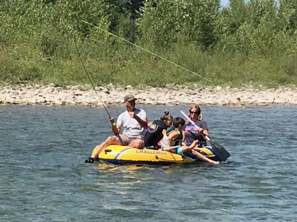 |
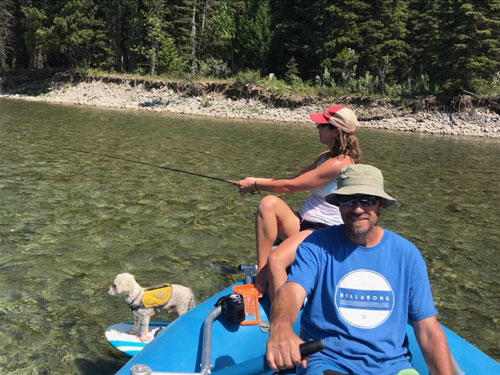 |
| Dan, Tracie, Aubrey, and Lane - filling up the boat! | Check out Carson using the stand-up paddle board, he is a river dog indeed! |
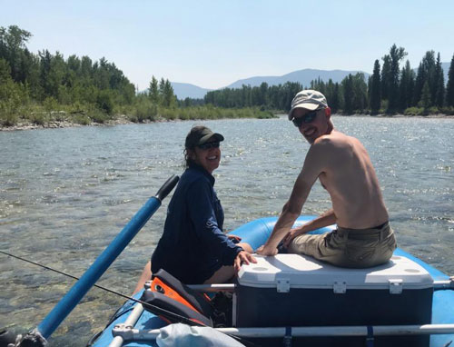 |
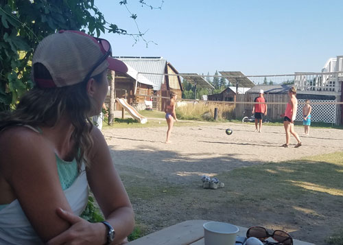 |
| Me & E, enjoying the VIP treatment. | After the float, we gathered back in Polebridge for a wonderful
dinner. The kids work up more appetite on the volleyball court. |
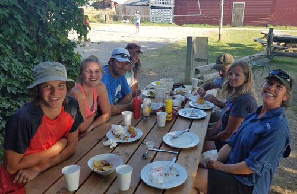 |
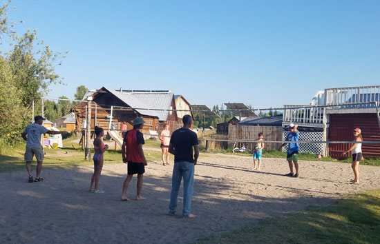 |
| Everyone smiling for the camera except Dan, who is stealing food off Tracie's plate! | Post-prandial game of Casazza volleyball |
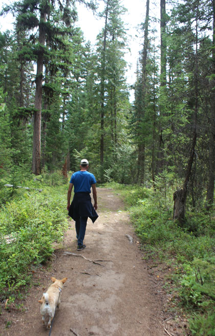 |
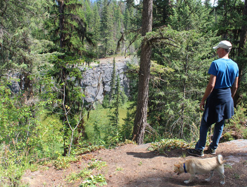 The boys checking out a bluff line seen along the trail, checking to see if it is rock climb-worthy. |
| A family walk to Finger Lakes | |
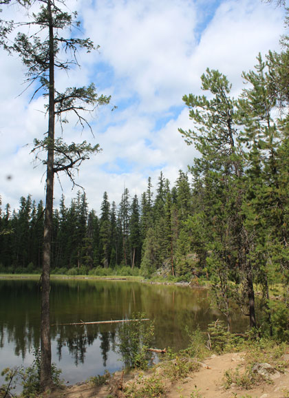 |
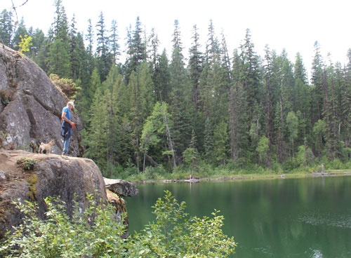 The boys on the bluff line above the lake. |
| The lovely lake | |
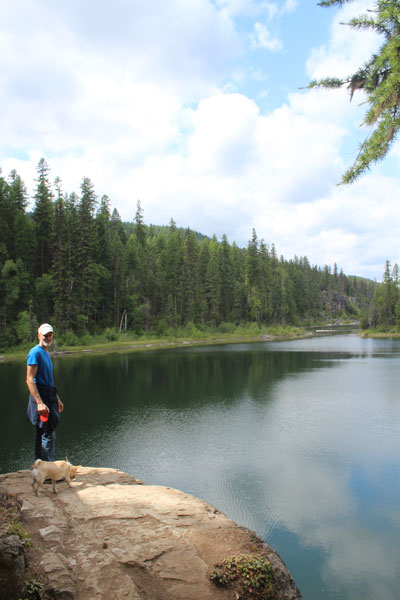 |
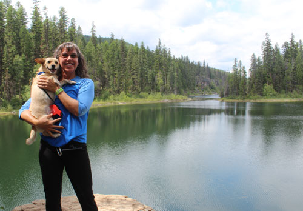 Happy much? |
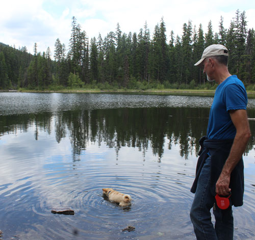 |
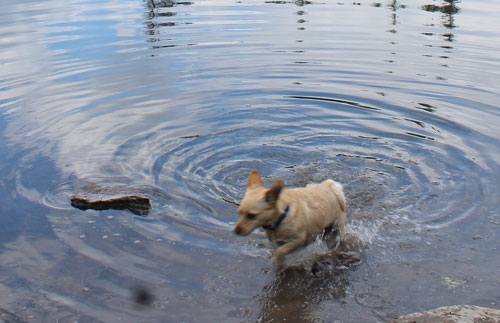 |
| We are trying to teach Buddy to like swimming by getting him to fetch sticks
in water that is slightly too deep. Here he goes after one that's just out of reach. |
Fetch fail! He makes the walk of shame back to the shore. |
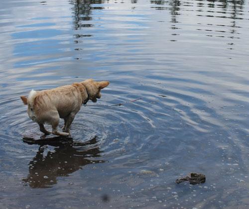 |
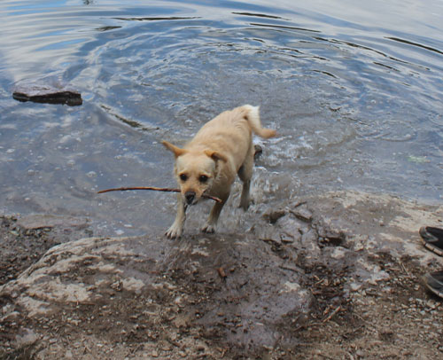 |
| But wait! He notices that flat rock and goes in for another attempt. | Success! But I think he feels that he barely escaped certain death. |
| Eric's Birthday |
|
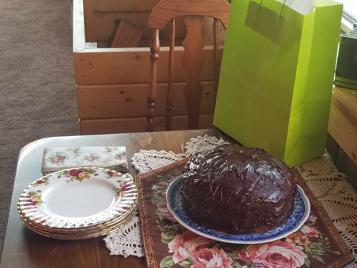 Happy Birthday to Eric! Dinner and cake at his parents' house. |
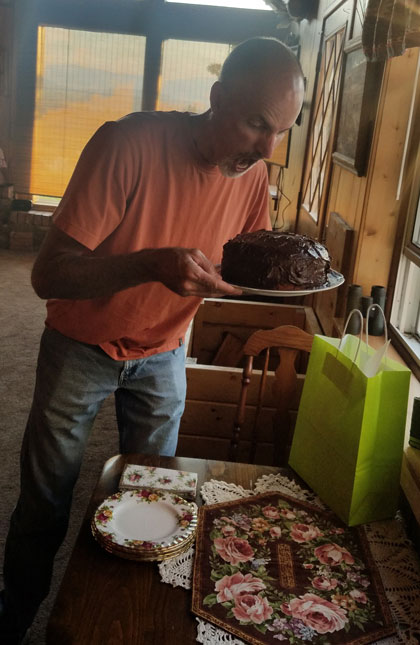 |
| Yellow cake with chocolate frosting? Mine! | |
| 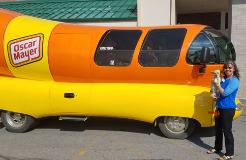 We were hanging out in Whitefish with us one day when someone told us that the Oscar Mayer Weinermobile was in town. We had to check it out. Buddy was not impressed. |
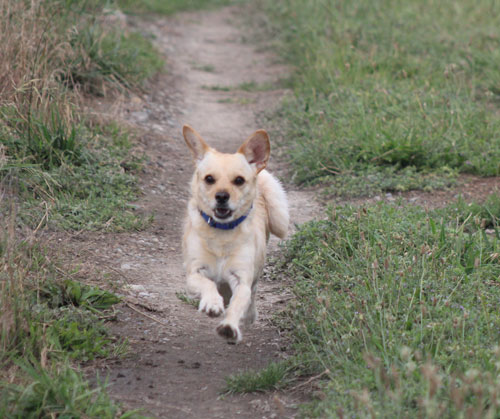 Buddy Casazza, super dog. |
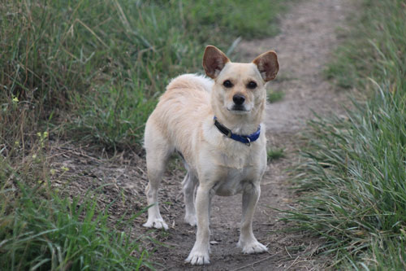 |
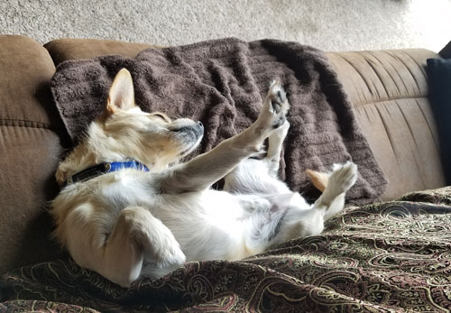 |
| Buddy Portrait | Buddy at rest |
|
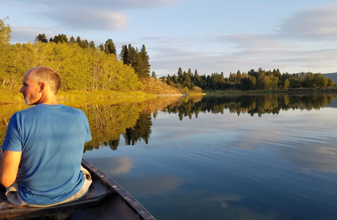 |
Buddy was not initially impressed the first time we put him in our canoe and
took him out on the lake. He was scared at first and stayed in the middle of the boat. (Thinking, no doubt, that we'd make him swim!) Here we are, just heading out for our first night of fishing with Buddy. |
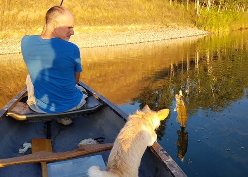 |
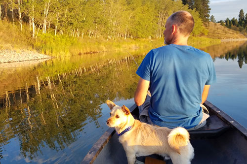 |
| That all changed as soon as Eric hooked the first fish. After that, he was a boat dog of the first order. |
His eyes were so wide I thought they might fall out! |
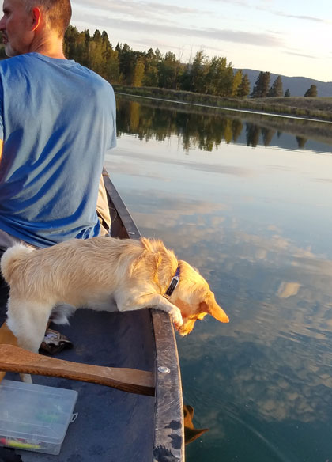 |
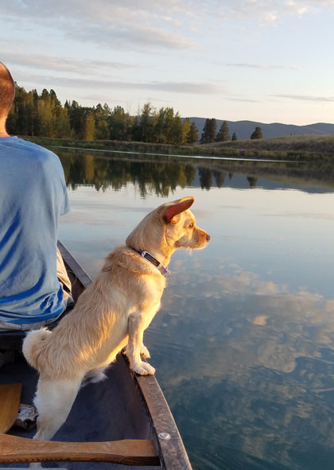 |
| Dad, I'll be your fish finder! | Deep thoughts on the water. |
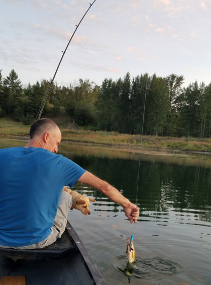 |
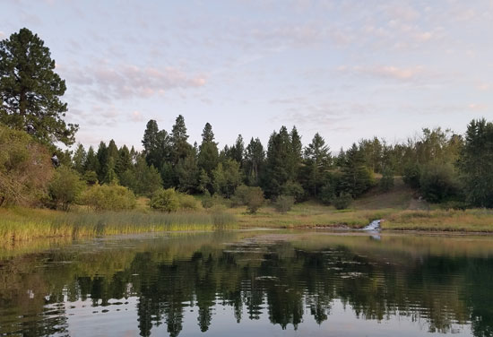 Beautiful scenery, including a blue heron on the left side that doesn't show up well in the photo. |
| By the end of the night, we had trouble with him going almost too far in leaning far over the side and balancing on the edge of the boat. |
|
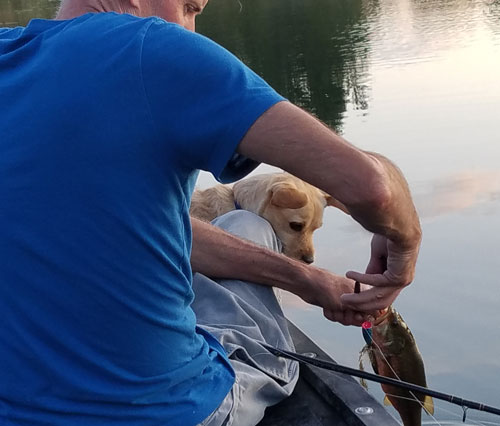 |
|
| Buddy was desperate to get his mouth on one of the fish, but Dad kept letting them go! | Impeding progress with his close supervision. |
| A full moon came up that night and was so beautiful. | Fishing our way back home in the moonlight. Lovely evening! |
| We have an annual tradition of meeting at the Kalispell fair and
enjoying the VFW's chicken dinner. We didn't all get the chicken this year, but we did enjoy our time there. |
Eric and I had never seen the Indian Relay Races and heard they were worth
seeing, so we went to the rodeo to enjoy the excitement. It was very exciting! |
| These guys go up to 30 mph around the track bareback, then jump off that
horse and onto the next one and go around again - four times. |
Fun evening around the house with Tara and her kids, as well as the Peterson
kids too. Even Buddy and our cows had a great time. |
|
Cookout & Campfire |
|
| Near the end of Eric's two weeks in Montana, we had a
cookout. Carter & Cooper kept Buddy fetching all night long. It was great seeing Buddy get to play as much as he wanted! |
It was so nice to see our family & friends gathered at our
house having fun. We loved it. |
|
Aubrey and Erik playing some ladder golf. |
|
| Buddy has his eye on the ball | |
| We finished the evening with a campfire, one of my favorite things to do! | Carter, Cooper, Eric, Hannah, Jeb, and Lucas - laughing around the fire. |
|
After I dropped Eric at the airport for his trip back to OKC, I headed
out to Glacier National Park. |
|
| There were wildflowers blooming everywhere. | |
|
I wasn't the only one who had the idea of going to the park that day,
it was full! |
|
| This is my favorite photo from this trip | |
| Being a fan of both Michelle Rivers and The Trego Pub, I
knew I had to head out there when I heard she was going to play that night. It is a lovely spot for sitting in the lawn with your dog and listening to live music. |
My date for the evening. He had impeccable manners. |
| This is the view to the side of The Trego Pub | This is the view from the patio looking out. Lovely! |
|
Here we have the mutton busting during the Family Fun Night. |
Fair weekend is a huge deal in our small community. This year we were blessed with very good weather and no smoke from forest fires - woo hoo! It was a great fair. |
| I think this is Marion's son on the sheep that decided to play
"dead on it's feet" in the middle of the ride. Here Marion tries giving it a little shove from behind to remind the sheep of what it is supposed to do. |
Two of these kids are from our church - Timothy on the left and
Brooklyn on the right. Timothy was the emcee of the event and did a great job. |
|
This kid could have the nickname, "Velcro"! |
|
| My favorite action shot of the evening | |
|
Speaking of tatur sacks, here are the sack races now. |
|
| Marion, also from our church, hauling around his youngest
daughter like a "sack 'o 'taturs" (as we'd say down south.) |
|
| The following evening, we enjoyed the annual PBR event,
"The Bull Thing". This was the 25th anniversary of this fun happening. It is such a great event for our tiny little town. |
There were 7,000 people in attendance, including Casazza family Ashley, Dan, and Tracie. |
|
Me & Rose goofing off while Dan is watching with seriousness. |
|
| Gerald Eash was the only local boy in the event. He turned
in a fantastic performance. He was the first rider of the evening to last eight seconds (after about 10 buck-offs), and got a high score that he maintained all evening until the last ride, when he came in second. Still, second-place in a national event like this was huge, we were very proud of him! |
|
| They added a new event this year, Shorty Gorham's American
Freestyle Bullfighting. It was both very exciting and hard to watch, as 3 of 4 of them got hurt. They used Spanish fighting bulls and had to stay in the ring with them 45 seconds, the closer they stayed to the bull, the higher their score. |
|
|
|
|
| In late August I attended an author talk at the library and
ended up in the Tobacco Valley News. I'm practically famous! |
|
| Amy, the source of most of my fun times, suggested we walk the
dogs on the beach of Lake Koocanusa one afternoon. |
It was so beautiful, I just couldn't believe it. I thought
we took a wrong turn and landed in the Caribbean! (Except with views of the Canadian Rockies thrown in!) |
|
After our walk, we sat on the beach for a relaxing time. Buddy dug himself a cool spot. |
|
| Buddy and Carson, having a ball. | |
|
Thank you Amy for another great time! |
|
| Later that week, I decided to go back. Amy had to work, so
it was just me & Buddy that time. I imagined lying on the beach, reading a book, while my dog rested peacefully beside me. WRONG! This is what Buddy did to my blanket in the first 5 minutes. He then got me to throw sticks for him for the rest of the time. |
But in his defense, he had a great time.
|
|
Kristi posted this fun picture of their kids on the first day of
school. Erik was not thrilled! |
|
| There is an owl in the window of this cool old Barnhardt barn, which is on our drive home. | |
|
We had a doozy of a storm one evening. Over 47 lightening strikes in
one night! One of the strikes lit a tree near our barn on fire. It was still burning strong the following day so the Forest Service came out to deal with it the next day. |
|
| Keith Taylor is the resident awesome photographer in the
area. He got this great shot of what could have been the strike that lit up that tree. |
|
| The Forest Service came in through our place to get to the tree. | Here you see the burning tree on the left and the Forest Service crew on the right. |
|
They couldn't put the fire out, so they cut down the tree. It was
a huge, old, |
|
|
Here Eric shows me how the bark was blown off in a strip that spiraled down the whole tree. |
|
| Here, he counts the rings. He got 149. That's an old tree! | |
| Two Osprey in a snag just above Dan & Rose's Pigeon Bridge place | On a morning walk with Buddy out in front of our house. |
| Taking Buddy out in the canoe one evening, not as much fun without Dad there to catch fish! | Hay from the alfalfa field that Mark & Eric planted in May, stacked behind our barn. |
| Eric changing pipe on that alfalfa field. The baled hay photo above is probably out of order. | While I waited for Eric to change the irrigation pipe, I took pictures of the sunset. |
Sunset over the alfalfa field |
|
| There is all this grass everywhere, but this steer wants to eat the stuff that's growing in the cattle guard! | |
| Amy is my sister-in-law, as well as my unofficial guide to all things fun to
do in Montana. She took me bike riding on the HooDoo trail along Lake Koocanusa. It was so beautiful that I had to take Buddy back there for a walk the next day. |
|
|
Mule deer doing a crosswalk in front of us on the trail. |
|
| Buddy gives this trail one curly tail up. | |